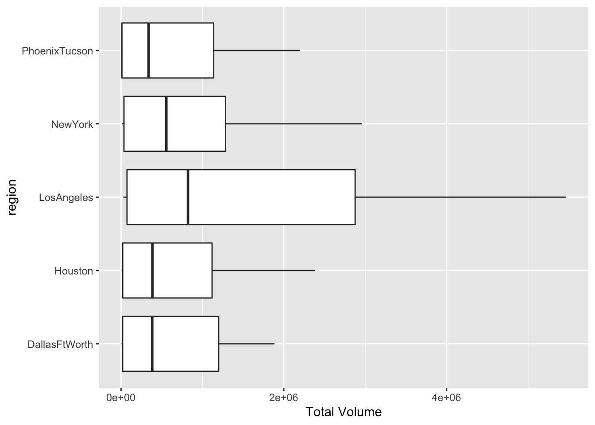
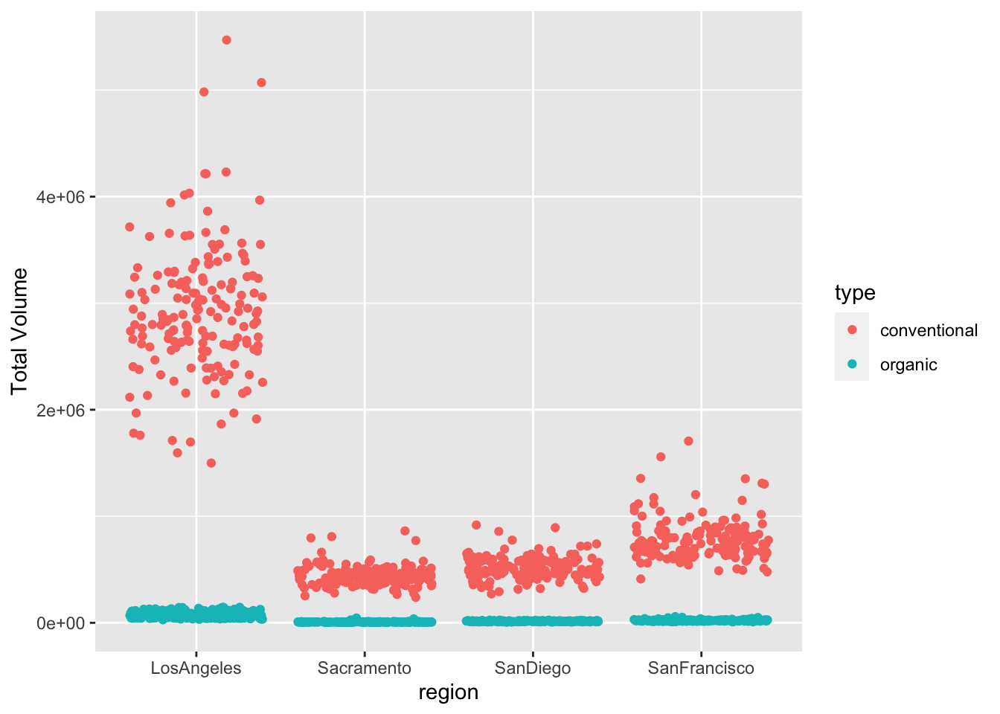
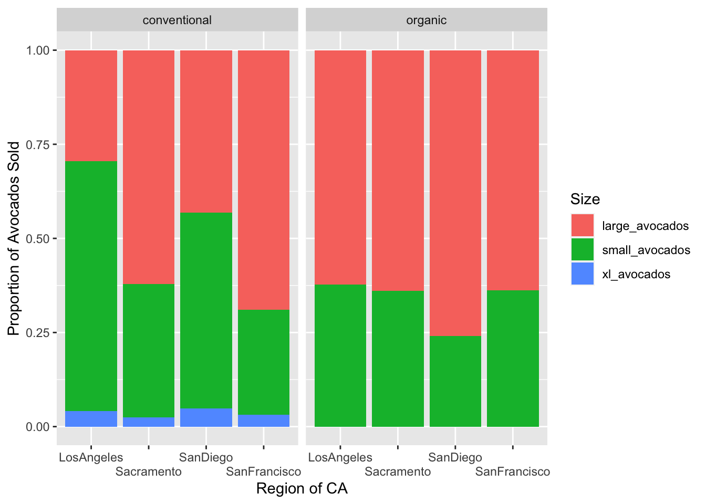

Lab 4
Set-up
1) Dataset Description
The data set contains information about avocados prices. The idea behind the data collection was to find a region in which avocado prices are low enough to allow millennials to buy their fix of avocado toast and also be able to buy a home.
2) Dataset Cleaning
avocado_data <- avocado_data |>
rename("xl_avocados" = `4770`,
"large_avocados" = `4225`,
"small_avocados" = `4046`)avocado_totalregions <- avocado_data |>
distinct(region)
states_data <- data.frame("state" = c("California", "SouthCarolina"))
regions_data <- data.frame("regions" = c("GreatLakes", "Midsouth", "Northeast", "NorthernNewEngland", "Plains", "SouthCentral", "Southeast", "West", "WestTexNewMexico"))
totalus_data <- data.frame("totalus" = c("TotalUS"))
avocado_states <- avocado_data |>
semi_join(states_data, by = c(region = "state"))
avocado_regions <- avocado_data |>
semi_join(regions_data, by = c(region = "regions"))
avocado_metro_regions <- avocado_data |>
anti_join(states_data, by = c("region" = "state")) |>
anti_join(regions_data, by = c("region" = "regions")) |>
anti_join(totalus_data, by = c("region" = "totalus"))Exercises
3) Which major region sold the most organic, small Hass avocados in 2017?
avocado_regions |>
filter(year == 2017,
type == "organic") |>
group_by(region) |>
summarize(mean_sum = mean(small_avocados)) |>
slice_max(mean_sum)# A tibble: 1 × 2
region mean_sum
<chr> <dbl>
1 West 35287.The region that sold the most organic, small Hass avocados in 2017 was the West with 35,287 sales.
4) Use the separate() function to split the Date variable into year, month, and day. In which month is the highest volume of avocado sales?
avocado_data |>
separate(col = Date, sep = "-", into = c("Year", "Month", "Day")) |>
group_by(Month) |>
summarize(mean_vol = mean(`Total Volume`)) |>
slice_max(mean_vol)# A tibble: 1 × 2
Month mean_vol
<chr> <dbl>
1 02 1018825.The month with the highest volume of avocado sales is February with 1,018,825 avocado sales.
5) Which metro area regions sold the most total avocados? Plot side-by-side boxplots of total volume for only the five regions with the highest averages for the Total Volume variable.
Regions with most avocado sales:
topfive <- avocado_metro_regions |>
group_by(region) |>
summarize(total_volume = mean(`Total Volume`)) |>
arrange(desc(total_volume)) |>
slice_head(n = 5)The metro region that sold the most avocados is Los Angeles, with 1,502,653 total avocado sales. This is followed by New York, Dallas/ Ft. Worth, Houston, and Phoenix / Tucson.
Boxplot:
top_five <- avocado_metro_regions |>
semi_join(topfive, by = c(region = "region"))
top_five |>
ggplot(mapping = aes(x = `Total Volume`,
y = region)) +
geom_boxplot()
Reshaping
6) In which regions is the price of organic versus conventional avocados most different? Support your answer with a few summary statistics and a visualization.
california_baby <- data.frame(region = c("LosAngeles", "SanDiego", "Sacramento", "SanFrancisco"))
california_regions <- avocado_metro_regions |>
semi_join(california_baby, by = c(region = "region"))
california_regions |>
group_by(region, type) |>
summarize(mean_price = mean(AveragePrice), .groups = "keep") |>
pivot_wider(names_from = type, values_from = mean_price) |>
mutate(diff = conventional - organic)# A tibble: 4 × 4
# Groups: region [4]
region conventional organic diff
<chr> <dbl> <dbl> <dbl>
1 LosAngeles 0.976 1.46 -0.479
2 Sacramento 1.27 1.97 -0.695
3 SanDiego 1.06 1.73 -0.673
4 SanFrancisco 1.40 2.21 -0.814#visualization
california_regions |>
ggplot(mapping = aes(y = `Total Volume`,
x = region,
color = type)
) +
geom_jitter()
The region where the price of organic and conventional avocados is the most different is San Francisco, with organic avocados being $0.81 more than conventional, on average.
7) Recreate the plot
ca_regions_long <- california_regions |>
pivot_longer(cols = small_avocados:xl_avocados,
names_to = "Size",
values_to = "Sales_Volume") |>
group_by(region, Size, type) |>
summarize(mean_sales = mean(Sales_Volume))ca_regions_long |>
ggplot(mapping = aes(y = mean_sales,
x = region,
fill = Size)) +
geom_col(position = "fill") +
facet_wrap(~ type) +
xlab("Region of CA") +
ylab("Proportion of Avocados Sold") +
scale_x_discrete(guide = guide_axis(n.dodge = 2))